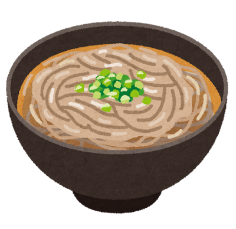
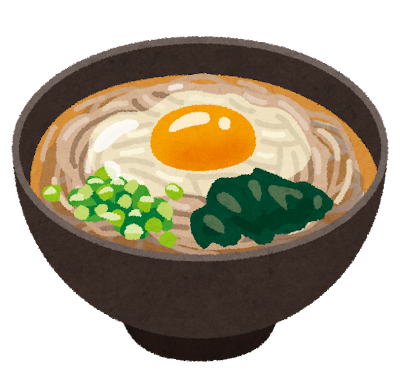
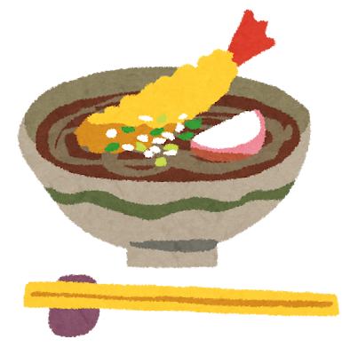
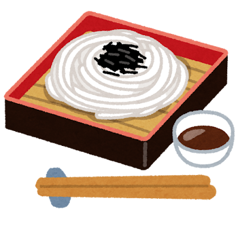
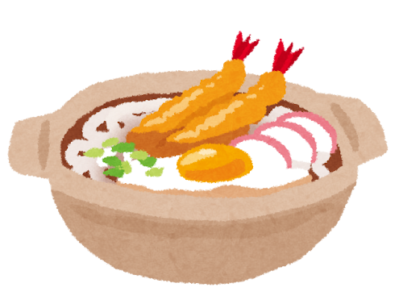
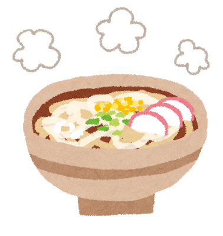
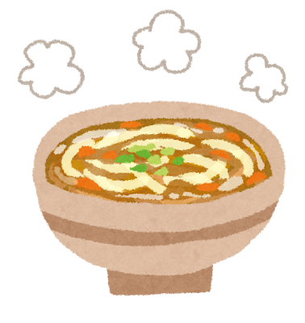

Soba and Udon: Japan’s Beloved Noodle Traditions

Soba: The Mountain Noodle
Soba (蕎麦) — thin buckwheat noodles — has been part of Japanese cuisine since the Edo period. Buckwheat thrives in cold, mountainous regions where rice cannot grow, making soba a staple of northern Japan and highland communities. The noodle-making tradition became an art: hand-cut soba (teuchi soba) is prized for its nutty aroma and slightly rough texture that holds sauce beautifully.
Eating soba on New Year s Eve (toshikoshi soba) is one of Japan s most enduring traditions. The long, thin noodles symbolize longevity, and their tendency to break easily represents cutting ties with the hardships of the past year.



Udon: Hearty and Warming
Udon (うどん) — thick, chewy wheat noodles — is soul food. Its origins in Japan date back to the Nara period (710–794), possibly influenced by Chinese noodle-making. Sanuki udon from Kagawa Prefecture is the most celebrated style, known for its firm, bouncy texture and clean wheat flavor.
Unlike soba s refinement, udon celebrates heartiness. A hot bowl of kitsune udon (with sweet fried tofu) or nabeyaki udon (simmered in a clay pot with tempura and egg) is winter comfort at its finest.




Soba and udon are two answers to the same question: how do you transform grain, water, and patience into something that nourishes both body and spirit?